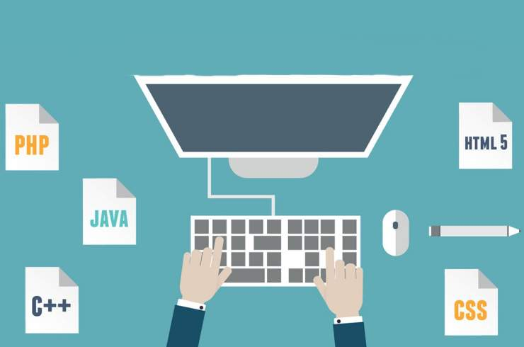

Glosario de terminos de programación

En esta pagina vamos a realizar un glosario con algunos de los principales terminos de programación para JAVA.
La información del glosario fue tomada de: https://www.mhe.es/universidad/informatica/8448136640/archivos/apendice_general_4.pdf
Terminos con A
Terminos con B
Terminos con C
Terminos con D
Terminos con E
Terminos con F
Terminos con H
Terminos con I
Terminos con P
Terminos con A
- Acoplamiento
Medida del grado en el que un objeto o componente
depende de otro. Bajo acoplamiento minimiza las
dependencias y es una indicación de un buen diseño
- Algoritmo
Método que describe cómo se resuelve un problema en
término de las acciones que se ejecutan y especifica el
orden en que se ejecutan estas acciones. Los algoritmos
ayudan al programador a planificar un programa antes de
su escritura en un lenguaje de programación.
- Asignación
Almacenamiento de un valor en una variable. La sentencia
de asignación es aquella que implementa la asignación y
utiliza un operador de asignación
Terminos con B
- Binario
Representación numérica en base 2. En esta base sólo se
utilizan los dígitos 0 y 1. Las posiciones de los d´digitos
representan potencias sucesivas de 2.
- Bit
Dígito binario que puede tomar dos valores posibles: 0 y 1.
Los bits son elementos básicos de construcción de
programas y datos
- Bolean
Tipos primitivos de datos. El tipo bolean puede
tomar sólo dos valores: true (verdadero) y
false (falso).
Terminos con C
- Clase
Colección encapsulada de datos y operaciones que actúan
sobre los datos. El concepto de clase es fundamental en
programación orientada a objetos. Una clase consta
demétodos y datos. Los métodos de una clase definen el
conjunto de operaciones permitidas sobre los datos de una
clase (sus atributos). Una clase puede tener muchas
instancia de la clase u objetos.
- Comentario
Trozo de texto que tienen como objetivo documentar el
programa y mostrar como se ha construido. Los
comentarios no son sentencias de programación y son
ignorados por el compilador. En Java los comentarios están
precedidos por dos barras (//) en una línea o encerrados.
- Compilación
Proceso de traducción de un lenguaje de programación.
Normalmente este proceso implica la traducción de un
lenguaje de programación de alto nivel a lenguaje de
programación de bajo nivel, o el formato binario de un
conjunto de instrucciones específicas. La traducción dse
realiza con un programa denominado compilador.
Terminos con D
- Depuración
Proceso de encontrar, fijar y eliminar errores en un
programa. Para estas tareas se suele utilizar una
herramienta de programación conocida como depurador.
- Diseño
Actividad de definir como se debe estructurar e
implementar un programa.
Terminos con E
- Entero
Un número completo (no es un número real con coma
decimal) tal como –5, 1, 10 y 2002. Los enteros se pueden
representar en Java de dos formas: utilizando el tipo
primitivo int o utilizando una instancia de una clase
integer.
- Expresión
Una subparte de una sentencia que representa un valor. Por
ejemplo, la expresión aritmética ´2+5´ representa el valor
7
- Expresión booleana, lógica
Una expresión cuyo resultado es del tipo lógico (bolean,
bol), Operadores tales como && y || toman operandos
lógicos y producen un resultado lógico. Los operadores
relacionales toman operandos de tipos diferentes y
producen un resultado lógico.
- Etiqueta
Una instrucción HTML que indica a un navegador Web
como visualizar un documento. Las etiquetas se encierran
entre corchetes.
Terminos con F
- Funcion
Construcción matemática a la que se pueden aplicar valores
y que devuelve un resultado.
Terminos con H
- Herencia
Una relación entre clases en que una subclase se extiende
desde una superclase.
- HTML (Hypertext Markup Language)
Lenguaje de ´script´ o de marcas para diseñar páginas Web
para creación y compartición de documentos electrónicos
integrados preparados para multimedia e Internet
Terminos con I
- IDE (integrated development)
Software para ayudar a lso programadores a escribir código
eficientemente.
- IGU, Interfaz Gráfica de Usuario
Una interfaz es un programa que se implementa utilizando
componentes AWT tales como cuadros, botones, etiquetas,
campos de texto, etc.
- Implementación
La actividad de escribir, compilar, probar y depurar el
código de un programa.
- Interfaz
Una interfaz se trata como una clase especial de Java. Cada
interface se compila en un archivo independiente de
bytecode, tal como una clase ordinaria. No se puede crear
un instancia de la interfaz. La estructura de una interfaz
Java es similar al de una clase abstracta en la que se puede
tener datos y métodos. Los datos ,sin embargo ,deben ser
constantes y los métodos pueden tener sólo declaraciones
sin implementación
Terminos con P
- Privado
Un modificador de miembros de una clase, un miembro
privado sólo puede ser referenciado en el interior de la
clase.
- Programa
Un conjunto de instrucciones (o sentencias) que describen
alguna aplicación o actividad ejecutada en una
computadora.
- Programador
Personas que diseña, escribe, prueba y depura programas.